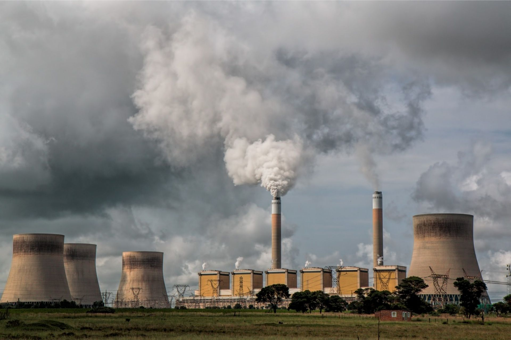

Fossil Fuels:
Fossil energy sources, including oil, coal, and natural gas, are non-renewable resources that formed when prehistoric plants and animals died and were gradually buried by layers of rock. The big problem with Fossil fuels is the greenhouse gasses they produce. When fossil fuels are burned to produce energy for electricity, heat and transportation, they release greenhouse gases like carbon dioxide, which trapes heat within the atmosphere. Fossil fuels are one of the biggest contributors to global warming to date.
This increased heat causes the surface temperature of the Earth to rise, which gives way to extreme weather, biodiversity loss, worsened health and rising sea levels, to give a few examples.
But the big question is, why do we still use them? Fossil fuels produce cheap and reliable energy. They supply about 80% of the world’s energy, the Environmental Energy Study Institute reports. Almost half of the U.S CO2 related emissions come from oil, with 36% coming from natural gas and another 19% from coal.

Is green energy beneficial compared to fossil fuels?
| Advantages of Green Energy |
Disadvantages of Green Energy |
| Won't run out unlike fossil fuels |
High upfront costs |
| Lower maintenance requirements |
Intermittent |
| Saves money |
Limited storage capabilities |
| Numerous environmental benefits |
Geographic limitations |
| Lower reliance on foreign energy sources |
Not always 100% carbon-free |
| Leads to cleaner water and air |
|
| Creates jobs |
|
| Cuts down on waste |
|
Even though both renewable and nonrenewable energy sources require land for infrastructure, renewable energy systems often have a smaller footprint. For example, solar panels can be installed on existing structures, and wind turbines are well suited for agricultural land without displacing crops.
Still, we have more work to do both on the technologies themselves and on our nation’s electric system to achieve the United States climate goal of 100% carbon-pollution-free electricity by 2035.